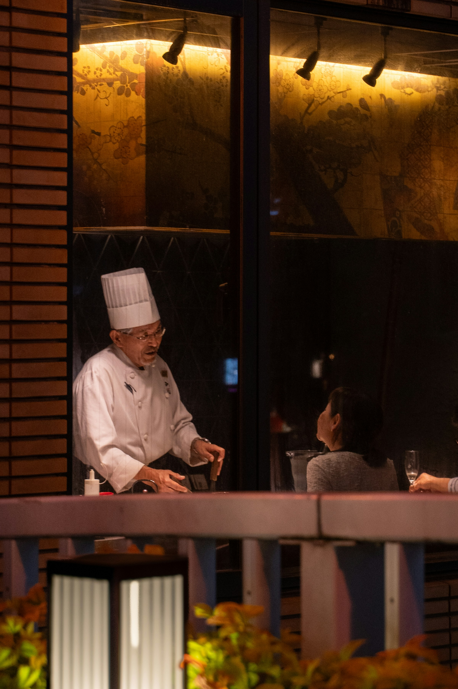

ダイニング
Dining
Fire, salt, and the Seto Inland Sea.火と、塩と、瀬戸内のすべて。
朝、昼、夜。三つの場所、三つの時間。Morning, afternoon, evening. Three places, three times.
漣のダイニングは、三つの場所に分かれています。Sazanami dining unfolds across three places.
朝凪の食卓、夕陽のラウンジ、そして夜の薪火。それぞれの時間に、それぞれの部屋を。A morning table in the calm, a sunset lounge, and the wood fire of the night. To each hour, its own room.

Where fire meets the sea.
潮 -ushio-
火と水と、瀬戸内のすべてを。Fire, water, and all of the Seto Inland Sea.
夜の漣は、薪火から始まる。瀬戸内の魚と、島の野菜、そして発酵──醤・酢・麹・酒。Night at Sazanami begins with the wood fire. Fish of the Seto Inland Sea, island vegetables, and fermentation — soy, vinegar, koji, sake.
一品ずつ、火の通り方が変わるたびに、皿が運ばれます。One course at a time, each plate arrives as the fire shifts.

Breakfast in morning calm.
朝餉の間 -asage-no-ma-
朝凪の海と、土鍋ごはん。The morning sea, and rice from the donabe pot.
朝餉の間は、東向きの障子の部屋。陽が昇る方角に座って、土鍋で炊いた島の米と、瀬戸内の塩、その日の魚を。Asage-no-ma is an east-facing room of shoji screens. Sit toward the rising sun, and receive island rice cooked in a clay pot, salt of the Seto Inland Sea, and the fish of the day.
和食一択、ただし主菜が三品から選べます。Japanese cuisine only, with a choice of three main courses.

When sunset becomes the chair.
凪の間 -nagi-no-ma-
茶と酒と、夕陽の時間。Tea, sake, and the hour of sunset.
凪の間は、西向きのラウンジ。日中は茶、夕方からは瀬戸内の地酒、夜は焚き火と短いつまみ。Nagi-no-ma is a west-facing lounge. Tea by day, local sake of the Seto Inland Sea from evening, and a wood fire with small bites at night.
時間で景色も飲み物も変わる、漣の中央広間です。As the hours change, so do the view and the drink. The central hall of Sazanami.